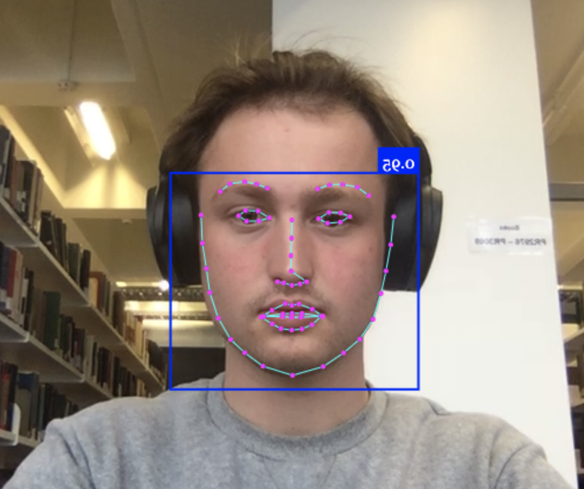
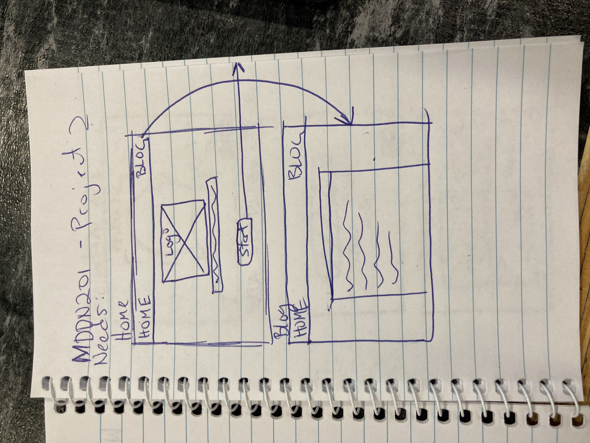
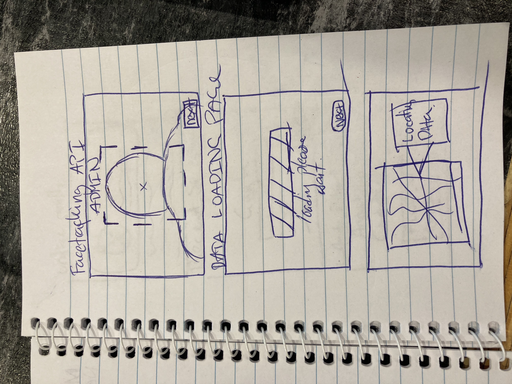
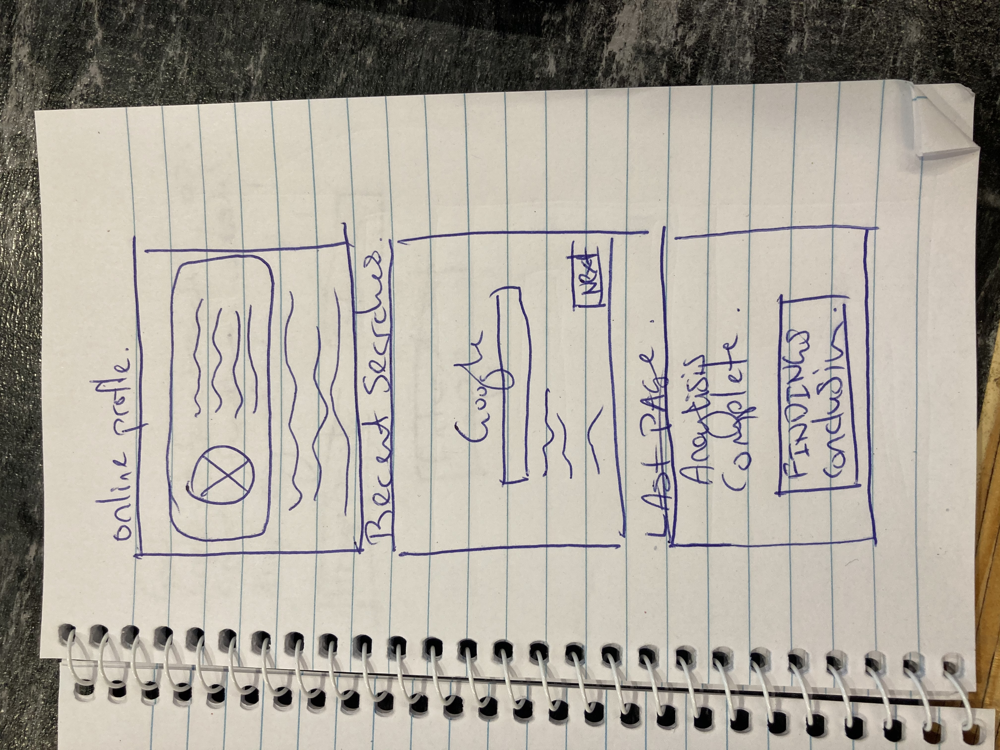
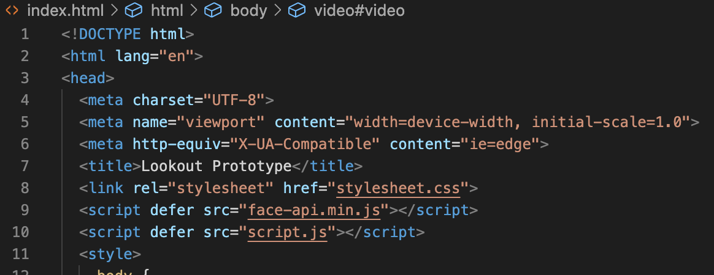
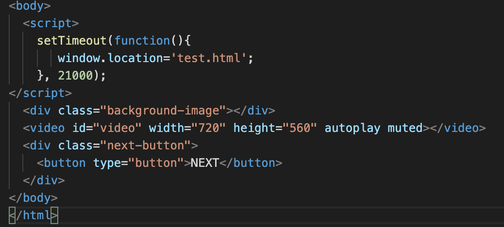
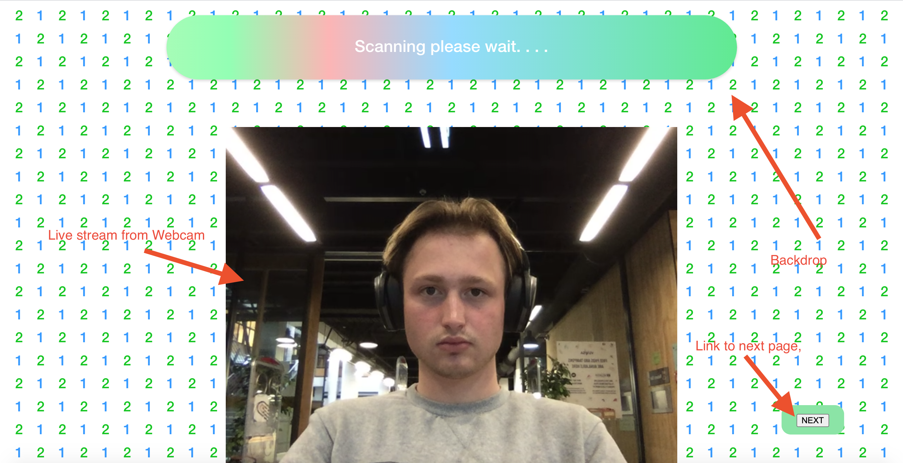

Journal Entry 1
Following on from the previous assignment, I did a project around internet security and our activity on the internet. I'd like to make a prototype using Adobe XD that I can put into my website. The prototype will be of an app that reads your internet security and shows you what it knows about you in a visual manner. I also came across a service called Anima which I might use to convert my prototype into a web format.
Journal Entry 2
I decided that I want to make an interactive web application that wllows the user to have fun while using it. I want to show how our every moves are tracked and traced and what the internet has the capability of doing. I'm to devloping my prototype using a cross of VSCode, Adobe XD & a Face tracking API. By implementing this API into my site I can show users what the computer see's when your online, how it can understand your facial movments & detect emotiions. I'm going to use it as the loading screen.
Journal Entry 3
Wireframe designs.
  Some sketches of the type of layout im going for.
Journal Entry 4
Implementing it into my website.
 This was quite a challenge but I managed to get it working correctly without major bugs. In the screenshots here I've accessed your local webcam which you give access to in the browser. It's not saved anywhere and all data is gone once the site is closed. I also added a timer to take you to the next page.
Journal Entry 5
Seeing it in action.
Here is a bit of info in whats happening on the page. The idea is to follow the site till the end, explaing what it gathered from its Analysis of your device .